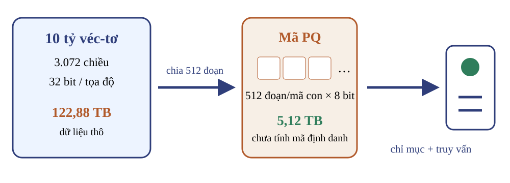
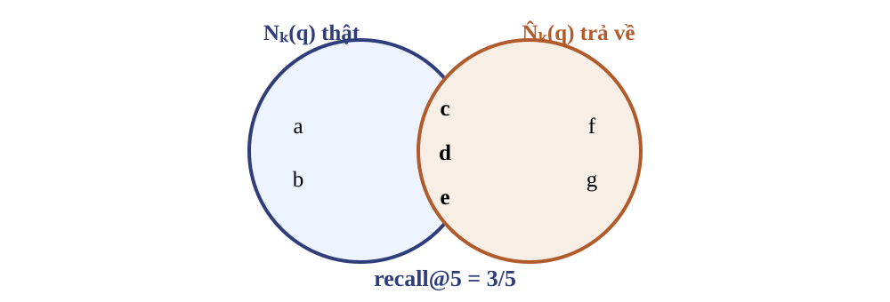
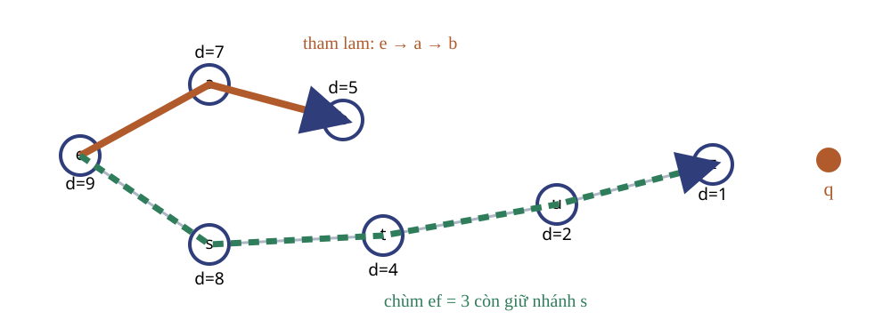
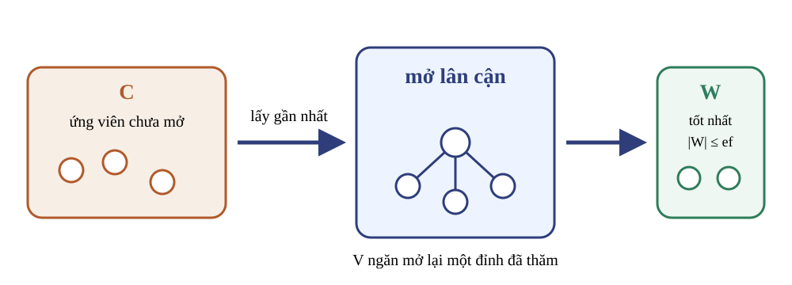
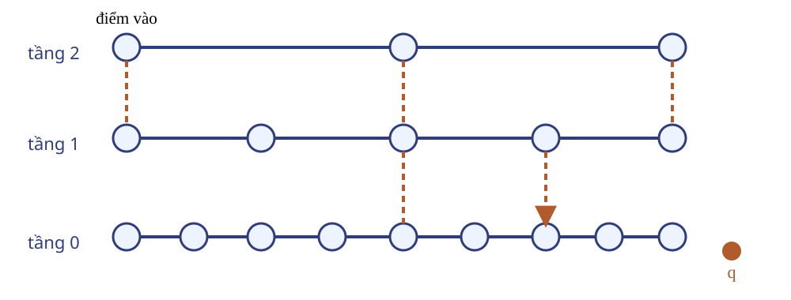
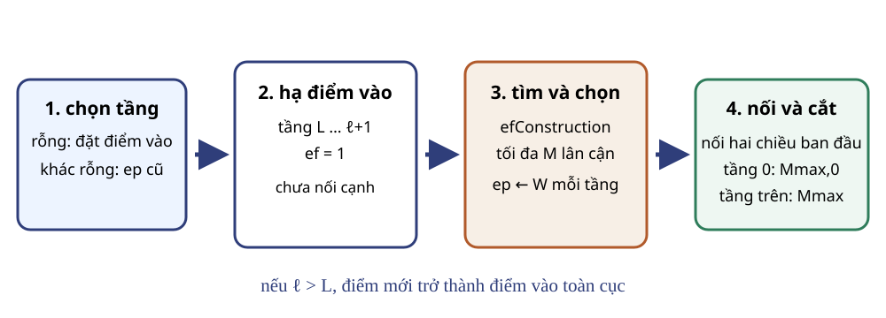
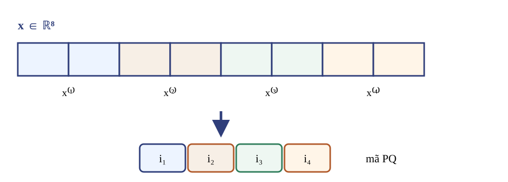
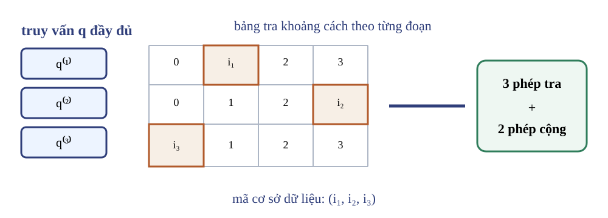
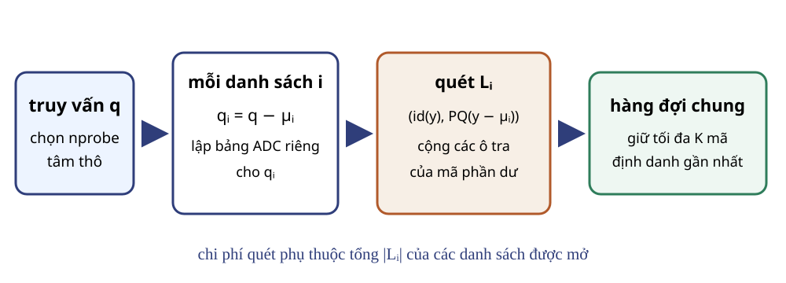

Năm học 2026–2027 · Học kỳ 1
Trường Đại học Công nghệ · Đại học Quốc gia Hà Nội

Định nghĩa truy vấn gần đúng và độ thu hồi tại $K$.
Chạy tay tìm kiếm; giải thích chèn HNSW và tra bảng PQ.
So sánh LSH, HNSW, PQ đầy đủ và IVF-PQ trên bốn trục.
$Y=\{y_1,\ldots,y_N\}\subset\mathbb R^D$, $q$, hàm khoảng cách $d$, $1\le K\le N$.
$K$ mã định danh phân biệt; phá hòa bằng thứ tự mã định danh cố định.
Với khoảng cách Euclid tính trong $\Theta(D)$, quét đầy đủ tốn $\Theta(ND)$ phép toán số học.

| Trục | Đại lượng | Điều phải giữ cố định |
|---|---|---|
| Chất lượng | recall@K | tập truy vấn, chuẩn đúng, K |
| Truy vấn | độ trễ, số khoảng cách | phần cứng, số luồng |
| Xây dựng | thời gian, dữ liệu huấn luyện | tham số và thứ tự chèn |
| Bộ nhớ | byte/véc-tơ và phụ phí | có giữ véc-tơ gốc hay không |
Băm ngẫu nhiên để các điểm gần dễ chung ngăn.
Duyệt các cạnh lân cận ở nhiều thang khoảng cách.
Thay véc-tơ bằng dãy chỉ số tâm để giảm bộ nhớ và tính gần đúng khoảng cách.
Mỗi véc-tơ là một đỉnh; cạnh hướng tới một số đỉnh gần hoặc hữu ích cho điều hướng.
đỉnh đã thăm, ứng viên chưa mở và các điểm tốt nhất đã thấy
mở lân cận của một ứng viên để tìm điểm gần truy vấn hơn

Mỗi bước chọn lân cận có khoảng cách nhỏ nhất và chỉ đi tiếp khi khoảng cách giảm.
| Bước | Đỉnh hiện tại | Lân cận chưa xét | Quyết định |
|---|---|---|---|
| 0 | $e:9$ | $a:7,\ s:8$ | chọn $a$ |
| 1 | $a:7$ | $b:5$ | chọn $b$ |
| 2 | $b:5$ | $a:7$ | dừng |
$d(b,q)=5$ không chứng minh $b$ gần nhất toàn đồ thị; $d(z,q)=1$.
| Sau khi mở | Ứng viên gần nhất trước | $W$ với $ef=3$ |
|---|---|---|
| $e$ | $a:7,\ s:8$ | $a:7,\ s:8,\ e:9$ |
| $a$ | $b:5,\ s:8$ | $b:5,\ a:7,\ s:8$ |
| $b$ | $s:8$ | $b:5,\ a:7,\ s:8$ |
| $s$ | $t:4$ | $t:4,\ b:5,\ a:7$ |
Nhánh $s$ còn trong hàng đợi dù không phải lựa chọn tham lam đầu tiên.

Dừng khi $W$ đã đầy và ứng viên gần nhất còn lại xa hơn phần tử xa nhất hiện tại của $W$.

$ep_2\xrightarrow{ef=1}ep_1\xrightarrow{ef=1}ep_0\xrightarrow{efSearch}W$
| Ký hiệu | Nghĩa |
|---|---|
| $\ell$ | tầng tối đa của điểm mới |
| $m_L$ | hệ số mức; giá trị lớn làm đuôi phân phối tầng dài hơn |
Điều kiện: $efSearch\ge K$.

Tầng $L\ldots\ell+1$: tìm với $ef=1$. Tầng $\min(L,\ell)\ldots0$: tìm với $efConstruction$, chọn tối đa $M$, nối rồi cắt bậc.
Xét ứng viên $e$ theo khoảng cách tăng dần tới điểm mới $q$; chấp nhận $e$ khi
Quy tắc tránh lấp đầy danh sách bằng nhiều điểm cùng một phía của $q$.
| Tham số | Tác động trực tiếp | Đánh đổi thường gặp |
|---|---|---|
| $M$ | số lân cận được chọn | bộ nhớ và số khoảng cách mỗi lần mở |
| $efConstruction$ | bề rộng tìm khi chèn | thời gian xây dựng và chất lượng cạnh |
| $efSearch$ | bề rộng ở tầng 0 khi truy vấn | độ trễ và độ thu hồi |
Véc-tơ gốc: $O(ND)$ số.
Đồ thị: kỳ vọng $O(NM)$ liên kết theo mô hình tầng của nguồn.
Vùng chưa phát hiện có thể chứa điểm tốt hơn.
Không có bảo đảm $O(\log N)$ phổ quát; trường hợp xấu có thể duyệt tuyến tính.
$Q:\mathbb R^D\to\{0,\ldots,k-1\}$
$Q(x)=i$ chọn tâm $c_i$ làm xấp xỉ của $x$.
Sai số bình phương trung bình đo mất mát tái dựng, không đồng nhất với độ thu hồi truy vấn.
$C=\{(0,0),(2,0),(0,2)\}$
$x=(1.7,0.4)$
Khoảng cách bình phương: $3.05$, $0.25$, $5.45$.
Mã $1$; tái dựng $\widehat x=(2,0)$.
Điều kiện trước: bộ mã $C=\{c_0,\ldots,c_{k-1}\}\subset\mathbb R^D$ đã học; quy tắc phá hòa cố định.
Điều kiện sau: không tâm nào trong bộ mã gần $x$ hơn tâm được chọn.
Mã 64 bit cần $k=2^{64}$ tâm nếu dùng một lượng tử hóa véc-tơ duy nhất.
Với véc-tơ 128 chiều, cả huấn luyện, gán tâm và lưu bộ mã đều bất khả thi.

$D$ chia hết cho $m$; mỗi đoạn có $D/m$ chiều và một bộ mã gồm $k^*$ tâm con.
$x=(0.2,1.8\mid2.7,0.1)$, hai bộ mã:
| Đoạn | Tâm 0 | Tâm 1 | Mã |
|---|---|---|---|
| $x^{(1)}$ | $(0,2)$ | $(2,0)$ | $0$ |
| $x^{(2)}$ | $(0,0)$ | $(3,0)$ | $1$ |
$Q(x)=(0,1)$ và $\widehat x=(0,2\mid3,0)$.
Giữ mã $Q(x)=(0,1)$ từ Q05 và lấy $q=(0.1,1.9\mid2.5,0.2)$.
| Đoạn | Tâm do mã chọn | Khoảng cách bình phương |
|---|---|---|
| 1 | $(0,2)$ | $0.1^2+(-0.1)^2=0.02$ |
| 2 | $(3,0)$ | $(-0.5)^2+0.2^2=0.29$ |
$\widetilde d(q,x)^2=0.02+0.29=0.31$.
Mỗi đoạn có $k^*=2^b$ tâm; $m$ đoạn tạo $(k^*)^m$ véc-tơ tái dựng khả dĩ.
Mỗi mã chiếm $\lceil mb/8\rceil$ byte; chưa gồm mã định danh và phụ phí chỉ mục.
không lượng tử hóa
chỉ giữ mã PQ

Lập bảng: $\Theta(k^*D)$ phép toán, bộ nhớ $\Theta(mk^*)$; chấm một mã: $\Theta(m)$.
Lập bảng $\Theta(k^*D)$; quét $\Theta(Nm)$; đọc khoảng $N\lceil mb/8\rceil$ byte mã.
$N=10^{10}$ vẫn là mười tỷ ứng viên cho mỗi truy vấn.
Cần một tầng định tuyến trước ADC.
Mỗi tâm thô trỏ tới danh sách véc-tơ thuộc ô.
Mỗi phần tử lưu mã định danh và mã ngắn của véc-tơ dư.
Ví dụ: $\mu_0=(0,0)$, $\mu_1=(8,0)$, $q=(7,1)$; danh sách 1 được mở trước vì $\|q-\mu_1\|^2=2<50$.
Lưu $(\operatorname{id}(y),\operatorname{PQ}(r(y)))$ trong $L_i$; khi quét $L_i$, lập bảng ADC từ $q_i$.
Trong I01, $q_1=(-1,1)$; nếu mở thêm $L_0$ thì bảng của nó dùng $q_0=(7,1)$.
| Hạng | Việc thực hiện |
|---|---|
| $k_cD$ | chọn tâm thô bằng quét đầy đủ |
| $nprobe\,k^*D$ | lập bảng ADC riêng cho từng danh sách |
| $m\sum|L_i|$ | chấm các mã được mở |

| Cơ chế | Chất lượng | Truy vấn | Xây dựng | Bộ nhớ |
|---|---|---|---|---|
| LSH | số bảng, số dò; recall@K | quét ngăn trùng | hàm và bảng băm | bảng băm, ID |
| HNSW | $efSearch$; recall@K | duyệt vùng đồ thị | chèn, cắt cạnh | $O(ND)$ véc-tơ; kỳ vọng $O(NM)$ cạnh |
| PQ đầy đủ | $m,b$; recall@K | $\Theta(Nm)$ | học $m$ bộ mã | $N\lceil mb/8\rceil$ byte; $k^*D$ số |
| IVF-PQ | $nprobe,m,b$; recall@K | quét $\sum|L_i|$ mã | học tâm thô, PQ | mã, ID, danh sách, tâm và bộ mã |
Giữ cố định tập truy vấn, chuẩn đúng, phần cứng và chính sách lưu véc-tơ gốc.
sources/reference-slides/princeton-vector-search/class-08-runbook-for-students.ipynb
Trước giờ học, mỗi sinh viên chuẩn bị d, xt, xb, xq, gt trên chính kernel sẽ dùng. Thời gian máy không tính vào 60 phút.
Mục nguồn: “Product Quantization” (82–89) và “Manual reconstruction” (90–97).
Dữ kiện: từ trạng thái R00, chạy ô 83–95; dùng $pq\_centroids$, $xb\_codes$, $pq\_reconstruction$ và $xb$.
Sản phẩm: bảng kích thước và công thức tái dựng véc-tơ 123.
Yêu cầu: hoàn thiện đúng ô 96, không gọi hàm giải mã cho dòng này.
Sản phẩm: biểu thức hoàn chỉnh và phép kiểm tra ở ô 97 trả về đúng.
| Kiểm tra | Giải thích của nhóm |
|---|---|
| đúng thứ tự đoạn | |
| đúng chỉ số tâm | |
| đủ $D$ tọa độ |
Sản phẩm: ba câu giải thích vì sao phép ghép bằng kết quả giải mã.
Mục nguồn: “Compare options for fixed code_size” (98–99).
Đọc hoặc chạy ô 99 với $M_{PQ}\in\{4,8,16\}$ và $nbits=48/M_{PQ}$.
| $M_{PQ}$ | $nbits$ | $dsub$ | $ksub$ |
|---|---|---|---|
| 4 | 12 | 16 | 4096 |
| 8 | 6 | 8 | 64 |
| 16 | 3 | 4 | 8 |
Sản phẩm: thêm kích thước mã, MSE và thời gian mã hóa–giải mã.
Yêu cầu:
Sản phẩm: một đoạn kết luận kèm bảng kết quả.
Mục nguồn: “IVFPQ index” (148–155).
Yêu cầu: với $d,xt,xb$ từ R00, chạy hoặc đọc trạng thái ô 149–151; giải thích chuỗi cấu hình.
Mục nguồn: “IVFPQ index” (152–155); dùng $xq,gt$ từ ô 17 và 21–24.
Sản phẩm: bảng dữ liệu thô và đồ thị tỷ lệ đúng hạng 1–thời gian.
| $nprobe$ | $nok/|xq|$ | tổng ms/50 lượt | $nprobe/200$ |
|---|---|---|---|
Yêu cầu: mô tả xu hướng quan sát được và giải thích bằng số danh sách, không suy rộng ngoài phép đo.
Sản phẩm: bảng đủ năm dòng và một đoạn giải thích.